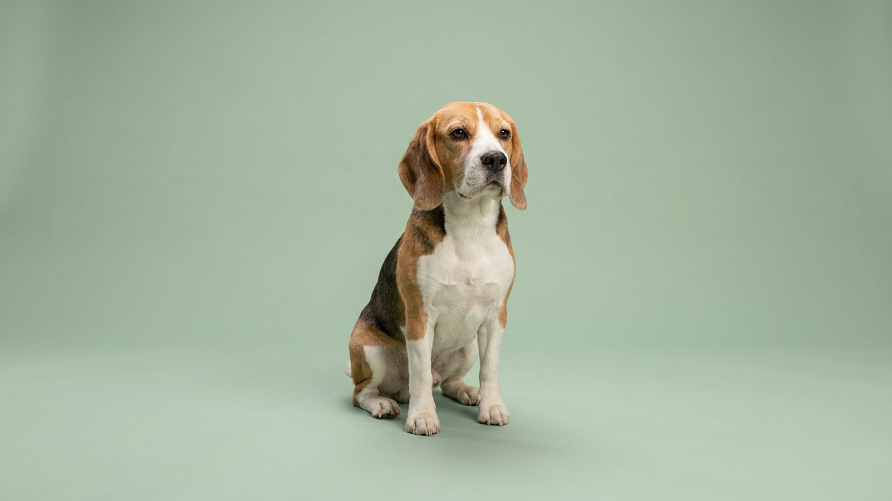

Вы зовёте бигля — он слышит вас, но не реагирует: нос прижат к земле, хвост в воздухе, мир вокруг перестал существовать. Это не упрямство и не плохое воспитание. Бигль — гончая, выведенная работать носом автономно, без оглядки на хозяина. Ниже — почему это происходит и три конкретных приёма, которые реально работают.
🐾 Не уверены, что это опасно?
Опишите симптом в AnimaLife — AI-ветеринар за минуту подскажет, что в пределах нормы, а когда пора к врачу.
У бигля около 220 миллионов обонятельных рецепторов — против 5 миллионов у человека. Когда собака берёт интересный запах, мозг буквально переключается в режим охоты: концентрация на следе вытесняет всё остальное, включая голос хозяина. Это не дефект — это именно то, ради чего бигля веками отбирали селекционеры.
Рядом с этим нужно понять один факт: бигль в поиске испытывает сильное удовольствие. Нюхание активирует те же центры вознаграждения, что еда и игра. Остановить его криком — всё равно что оторвать человека от захватывающей игры одним словом «стоп». Не поможет.
Бигль не убегает из злого умысла — он следует запаху, потому что так устроен. Два уязвимых места:
Чип и адресник на ошейнике — не альтернатива забору, а дополнительная страховка. Бигль, взявший след, способен уйти на несколько километров за короткое время.
Бигль не сложная собака — он просто другая. Попытки подавить инстинкт гончей наказаниями не работают и разрушают доверие. Работает переориентация: дайте собаке нюхать в контролируемых условиях, сделайте возвращение к хозяину выгодным, уберите возможность самовольного побега. Это требует времени, но результат — бигль, с которым можно спокойно гулять.
Материал носит информационный характер и не заменяет очную консультацию ветеринара.
🐾 Питомец ведёт себя странно?
AnimaLife расшифрует поведение кошки и собаки и подскажет, что делать. Попробуйте бесплатно прямо в мессенджере.
🐾 Понравился разбор?
Подпишитесь на канал — каждый день разбираем по одному тревожному симптому у кошек и собак: что в пределах нормы, а когда пора к врачу. Подпишитесь, чтобы не пропустить разбор, который может спасти здоровье вашего питомца.